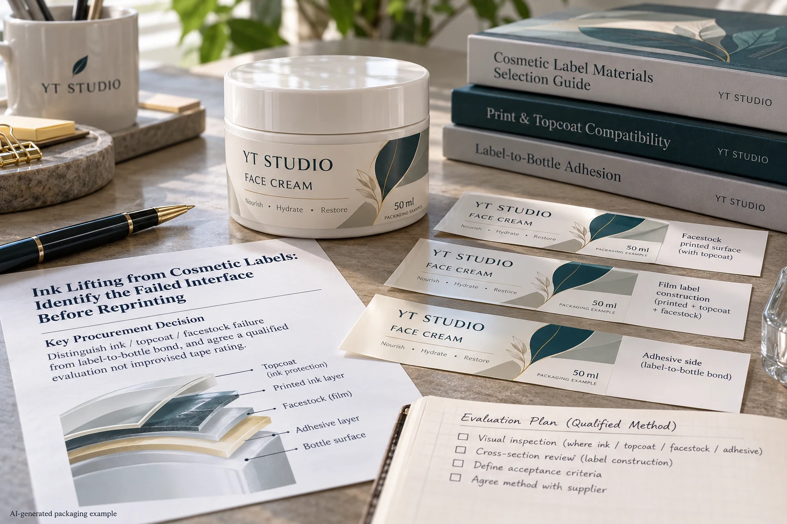
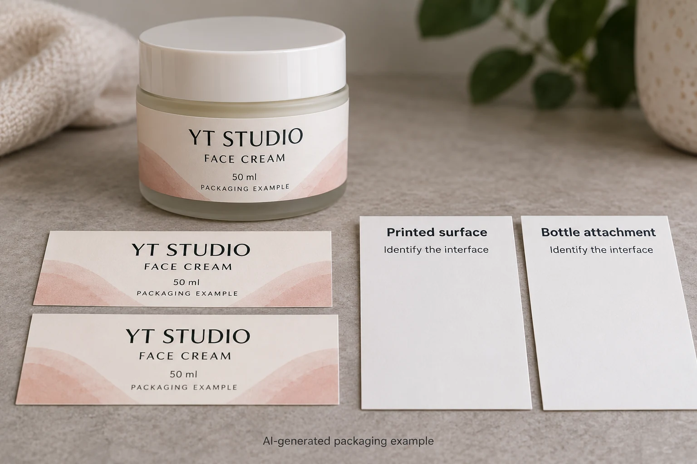

A cream label remains attached to the jar, but a small printed area comes away during an assessment. The complaint says adhesive failure. That description can send the investigation toward the bottle bond even though the visible problem may be somewhere else in the printed construction.
Identify the material interface associated with ink lifting before choosing a test method or changing the adhesive. Keep ink-to-surface, coating-to-ink, laminate and label-to-container questions separate. A photograph can locate a symptom; it rarely proves the complete failure mechanism.

Start with what remains on each side
Identify the sample, finished label construction, artwork revision and the event that produced the observation. Is the printed area marked, removed, transferred or covered by another material? Does the face film stay on the jar? Is a protective layer also involved?
Preserve the relevant pieces and record which surface faced which. Avoid cleaning, rubbing or repeating the event simply to obtain a more dramatic photograph. Those actions can change the evidence before the supplier understands the original observation.
Describe what is visible without upgrading it into a diagnosis. A useful note might say that a colored region appears on the contacting material while the label face remains attached. It should not automatically say that the bottle adhesive failed or that the ink formulation is wrong.
Keep the interfaces in a sensible order
Ask the converter to identify the actual layer arrangement. A face material can have surface treatment or a print-receptive coating; printed ink can have a protective finish or laminate above it. The complete stack matters when explaining what moved and what stayed.
Our tack and peel guide addresses adhesive measurements. It does not rate the attachment of the printed image to the face surface. Likewise, dry-scuff review concerns a defined handling event, which is not automatically the same assessment as an ink-adhesion investigation.
If transferred ink was found between wound labels before application, use the setoff guide to record that contact pair. The event and stage should determine the investigation route, not the convenience of one familiar word such as rubbing.
Agree a method for the actual material system
Do not improvise a universal tape test and assign it a formal rating. The tape, sample preparation, material stack, conditioning and operator procedure can affect what is being assessed. Ask the qualified production or testing party which method is appropriate and what its result can support.
ASTM's public D3359 summary identifies a coating-adhesion method with a defined substrate scope and notes that failures in multilayer systems can occur between coats. It is not a ready-made certification for every printed polymer label. Any use or adaptation needs competent agreement on applicability; this guide reproduces no test procedure.
If the parties use an internal assessment, identify it honestly as that method. Keep its revision, intended purpose and acceptance agreement. A practical screen can be useful without being mislabeled as compliance with a standard it did not follow.
Use an interface-investigation record
| Field | Record | Decision it supports |
|---|---|---|
| Specimen | Job, construction, artwork and finished-sample identity | Does it represent the proposed supply? |
| Event | Original contact, handling or agreed assessment | Which question is actually being investigated? |
| Material interfaces | Known layer order and observed residue on each side | Where might separation have occurred? |
| Method | Qualified procedure, relevant conditions and operator | Can observations be compared meaningfully? |
| Disposition | Technical interpretation, scope and next identified sample | What evidence supports the proposed correction? |
Fill in specimen and event first. Preserve the original observation, obtain the construction information and have the technical party select the appropriate assessment. Compare findings with its stated scope before changing the artwork, surface preparation or protective layer.
If a candidate correction is proposed, identify what changes and what remains constant. Review a representative finished sample under the agreed arrangement. A successful result after changing several components can support that new combination, while leaving the original cause unresolved.

Two symptoms can require different action
In one hypothetical case, the entire label detaches from a jar while the printed image remains intact. That points the investigation toward the attachment and application arrangement, without proving which factor caused it.
In another, the label remains attached while an image region separates at a layer boundary. Buying a more aggressive bottle adhesive would not directly answer that observed interface. The converter needs to investigate the relevant face, print or finish arrangement.
The distinction avoids promising a remedy before the evidence supports it. It also keeps the buyer from comparing unrelated test values and treating the largest number as the best corrective material.
Ask for a correction tied to the observed interface
Hold the affected release when the specimen is unidentified, the assessment method is unclear or a proposed fix cannot be connected to the observation. A negative screen is not automatically a total material rejection; an unexplained positive one is not approval of every use condition.
For printed cosmetic labels, provide the construction reference, artwork, sample identity, quantity and an account of the event with photographs and retained pieces where appropriate. Ask the supplier which interface and assessment it proposes to review.
Prepare the message using the inquiry form, then send records through email or WhatsApp. The form does not upload attachments. Keep the accepted correction connected to the exact finished construction instead of replacing the investigation with a vague request for stronger labels.